Overview
This article will demonstrate some fantastic ggplot2 extension packages.
patchwork
The patchwork package enables plots to be patched together.
A convenient hack to add a centred title in a non-faceted plot is to
add a facet_wrap layer with a character string for the
facets argument.
library(patchwork)
p1 <- mtcars |>
gg_point(
x = mpg,
y = disp,
y_labels = \(x) replace_seq(x),
) +
facet_wrap(~"Plot 1")
p2 <- mtcars |>
gg_boxplot(
x = gear,
y = disp,
group = gear,
width = 0.5,
y_labels = \(x) replace_seq(x),
) +
facet_wrap(~"Plot 2")
p3 <- mtcars |>
gg_smooth(
x = disp,
y = qsec,
x_breaks = scales::breaks_pretty(4),
) +
facet_wrap(~"Plot 3")
(p1 + p2) / p3 +
plot_annotation(
title = "A collection of plots patched together",
subtitle = "Works so nice!",
theme = light_mode_rt() +
theme(
plot.title = element_text(margin = margin(t = 10 * -0.5, b = 10 * 0.75)),
plot.subtitle = element_text(margin = margin()),
)
)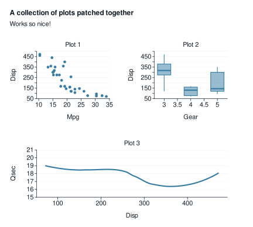
ggalluvial
The ggalluvial package supports sankey charts.
library(ggalluvial)
titanic_wide <- data.frame(Titanic)
titanic_wide |>
gg_blanket(
geom = "alluvium",
stat = "alluvium",
y = Freq,
col = Survived,
mapping = aes(axis1 = Class, axis2 = Sex, axis3 = Age),
flipped = FALSE,
x_breaks = c(1, 2, 3),
x_labels = c("Class", "Sex", "Age"),
y_limits = c(NA, NA),
col_pal = c(orange, teal),
) +
geom_stratum(
colour = "black",
fill = "#fcfdfe",
show.legend = FALSE,
) +
geom_text(
mapping = aes(label = after_stat(stratum)),
stat = "stratum",
colour = "black",
show.legend = FALSE,
) +
guides(colour = "none") +
ggeasy::easy_remove_y_axis()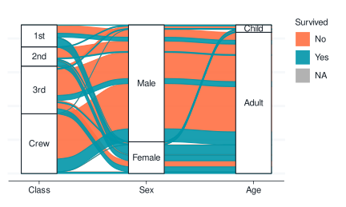
ggblend
The ggblend package provides blending of colours. Note you must use a graphics device that supports blending.
penguins |>
gg_blanket(
x = flipper_length_mm,
col = species,
stat = "density",
col_pal = RColorBrewer::brewer.pal(3, "Set1"),
) +
geom_density(
alpha = 0.5,
) |>
ggblend::blend(blend = "multiply")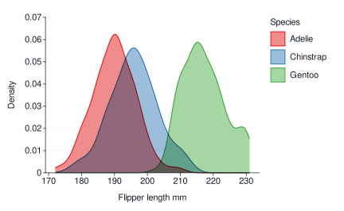
ggdensity
The ggdensity package provides visualizations of density estimates.
library(ggdensity)
data.frame(
x = rnorm(1000),
y = rnorm(1000),
z = c(rep("A", times = 500), rep("B", times = 500))
) |>
gg_blanket(
geom = "hdr",
stat = "hdr",
x = x,
y = y,
col = z,
facet = z,
colour = NA,
)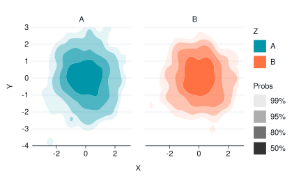
library(ggdensity)
data.frame(
x = rnorm(1000),
y = rnorm(1000),
z = c(rep("A", times = 500), rep("B", times = 500))
) |>
gg_blanket(
geom = "hdr",
stat = "hdr",
x = x,
y = y,
#this method of removing colour is better for the legend
col_pal = scales::alpha(blue, 0),
) 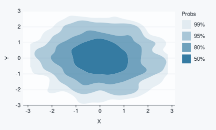
ggdist
The ggdist package enables the visualisation of uncertainty.
library(ggdist)
library(distributional)
data.frame(
distribution = c("Gamma(2,1)", "Normal(5,1)", "Mixture"),
values = c(
dist_gamma(2, 1),
dist_normal(5, 1),
dist_mixture(
dist_gamma(2, 1),
dist_normal(5, 1),
weights = c(0.4, 0.6))
)) |>
gg_blanket(
geom = "slabinterval",
stat = "slabinterval",
y = distribution,
mapping = aes(dist = values),
y_expand = c(0.05, 0.05),
alpha_pal = 0.5,
# show_slab = FALSE,
# show_interval = FALSE,
# side = "both",
) +
labs(width = "Width")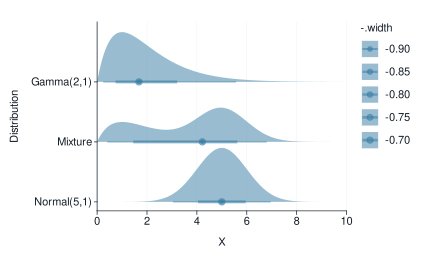
library(ggdist)
tibble(x = 1:10) |>
group_by(across(everything())) |>
do(tibble(y = rnorm(100, .$x))) |>
median_qi(.width = c(0.5, 0.8, 0.95)) |>
mutate(.width = factor(.width)) |>
gg_blanket(
geom = "lineribbon",
x = x,
y = y,
ymin = .lower,
ymax = .upper,
col = .width,
colour = "black",
col_legend_rev = TRUE,
col_pal = rev(RColorBrewer::brewer.pal(n = 3, "Blues")),
)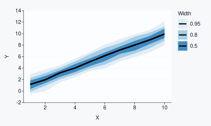
ggeasy
The ggeasy package provides a lot of support for easily modifying themes. Removing axes often is useful for maps.
penguins |>
mutate(across(sex, \(x) str_to_sentence(x))) |>
gg_jitter(
x = species,
y = body_mass_g,
col = sex,
col_title = "",
theme = light_mode_t(),
) +
ggeasy::easy_remove_y_axis(what = c("line", "ticks"))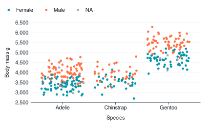
ggforce
The ggforce package includes functions for annotating areas of points, and a geom for making a smoothed line graph using a b-spline.
library(ggforce)
penguins |>
gg_blanket(
geom = "mark_hull",
x = flipper_length_mm,
y = body_mass_g,
col = species,
coord = coord_cartesian(),
alpha_pal = 0.5,
) +
geom_point()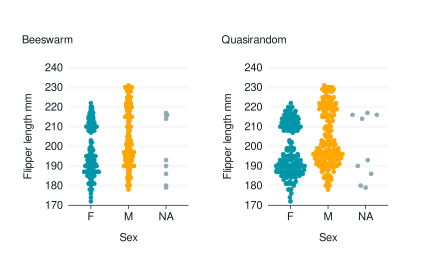
economics |>
slice_head(n = 35) |>
gg_path(
stat = "bspline",
x = date,
y = unemploy,
n = 100,
linewidth = 1,
) 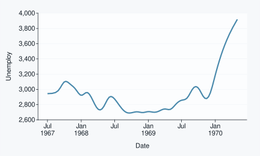
iris |>
mutate(across(Species, \(x) str_to_sentence(x))) |>
gg_blanket(
geom = "shape",
stat = "voronoi_tile",
x = Sepal.Length,
y = Sepal.Width,
col = Species,
group = 1,
colour = "#fcfdfe",
col_pal = c(teal, orange, navy),
)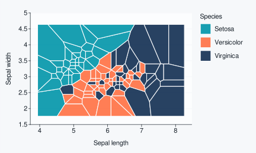
ggh4x
The ggh4x package includes enhanced facet functionality.
iris |>
rename_with(\(x) snakecase::to_snake_case(x)) |>
mutate(across(species, \(x) str_to_sentence(x))) |>
mutate(size = if_else(species == "Setosa", "Short Leaves", "Long Leaves")) |>
gg_point(
x = sepal_width,
y = sepal_length,
x_breaks = scales::breaks_pretty(n = 3),
) +
ggh4x::facet_nested(
cols = vars(size, species),
nest_line = TRUE,
solo_line = TRUE,
) +
theme(strip.text.x = element_text(margin = margin(t = 2.5, b = 5)))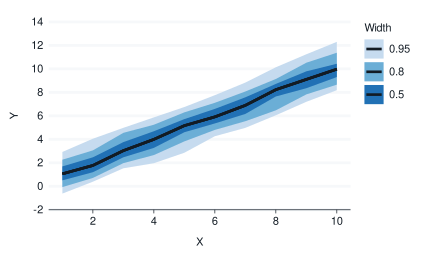
gghighlight
The gghighlight package enables geoms or parts thereof to be highlighted.
penguins |>
gg_point(
x = flipper_length_mm,
y = body_mass_g,
) +
gghighlight::gghighlight(body_mass_g >= 5000)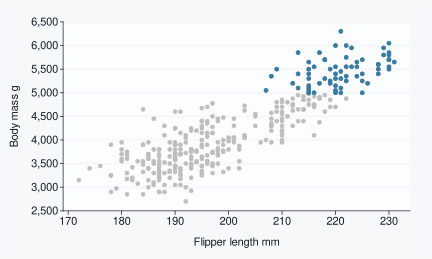
The gg_* function builds the scale for the data that it
thinks will be within the panel. Therefore in some situations, you may
need to make adjustments, so that the scale builds correctly.
penguins |>
gg_histogram(
x = flipper_length_mm,
col = species,
x_breaks = scales::breaks_pretty(4),
col_pal = rep(blue, 3),
) + #build the scale for not faceted (i.e. all data)
facet_wrap(~species) + #then add facet layer
gghighlight::gghighlight() 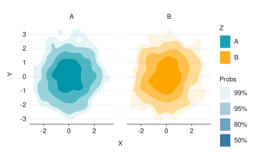
ggnewscale
The ggnewscale package enables multiple colour scales.
penguins |>
gg_blanket(
x = flipper_length_mm,
y = body_mass_g,
) +
geom_point(
mapping = aes(colour = bill_length_mm),
data = penguins |> filter(species == "Gentoo"),
) +
scale_color_viridis_c(option = "G", direction = -1) +
labs(colour = "Gentoo\nBill length (mm)") +
ggnewscale::new_scale_colour() +
geom_point(
mapping = aes(x = flipper_length_mm, y = body_mass_g, colour = species),
data = penguins |> filter(species != "Gentoo"),
) +
scale_color_manual(values = c(plum, orange)) +
labs(colour = "Species")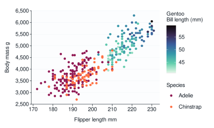
ggrepel
The ggrepel package can be used to neatly avoid overlapping labels.
mtcars |>
tibble::rownames_to_column("car") |>
filter(wt > 2.75, wt < 3.45) |>
gg_point(
x = wt,
y = mpg,
label = car,
) +
ggrepel::geom_text_repel(
colour = blue,
size = 3.53,
) 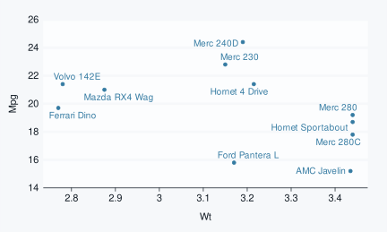
ggridges
The ggridges package enables ridgeline plots.
library(ggridges)
ggridges::Catalan_elections |>
rename_with(snakecase::to_snake_case) |>
mutate(year = factor(year)) |>
gg_blanket(
geom = "density_ridges",
stat = "density_ridges",
coord = coord_cartesian(),
x = percent,
y = year,
col = option,
colour = "white",
x_limits = c(0, 100),
y_expand = expansion(c(0, 0.125)),
alpha_pal = 0.7,
)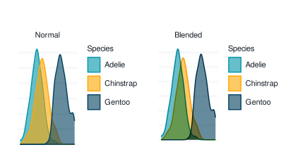
ggtext & mdthemes
The ggtext and mdthemes package support using markdown in text.
penguins |>
gg_point(
x = bill_depth_mm,
y = bill_length_mm,
col = species,
facet = island,
facet2 = sex,
x_labels = \(x) glue::glue("_{x}_"),
x_title = "**Bill depth** (mm)",
y_labels = \(x) replace_seq(glue::glue("_{x}_")),
y_title = "**Bill length** (mm)",
facet_labels = \(x) glue::glue("_{x}_"),
title = "***Pygoscelis*** *penguin* bill **lengths** and depths",
subtitle = "<span style = 'color: #2596be ;'>**Adelie**</span>,
<span style = 'color:#fc7c24;'>**Chinstrap**</span>,
*and* <span style = 'color:#9c1e74;'>**Gentoo**</span>",
theme = mdthemes::as_md_theme(light_mode_rt())
) +
guides(colour = "none", fill = "none")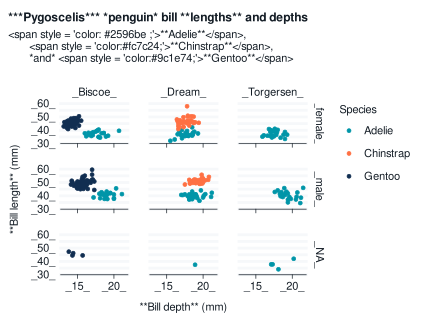
geomtextpath
The geomtextpath package enables curved text.
library(geomtextpath)
expand.grid(x = 1:nrow(volcano), y = 1:ncol(volcano)) |>
mutate(z = c(volcano)) |>
gg_contour_filled(
x = x,
y = y,
z = z,
binwidth = 20,
x_expand = c(0, 0),
x_limits = c(NA, NA),
y_limits = c(NA, NA)) +
geom_textcontour(
aes(label = after_stat(level)),
size = 2.5,
straight = TRUE,
) +
ggeasy::easy_remove_axes() 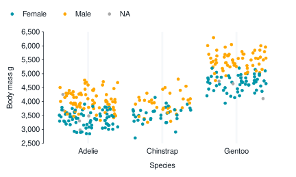
ggiraph
The ggiraph package enables interactive plots.
p <- diamonds |>
gg_blanket(
x = color,
y_expand_limits = 0,
stat = "count",
theme = light_mode_rt(base_size = 9, base_family = "arial"),
) +
ggiraph::geom_bar_interactive(
mapping = aes(tooltip = after_stat(count), data_id = color),
width = 0.75,
colour = blue,
fill = blue,
alpha = 0.9
)
ggiraph::girafe(
ggobj = p,
height_svg = 3,
width_svg = 5,
options = list(
ggiraph::opts_sizing(rescale = TRUE, width = 0.7),
ggiraph::opts_tooltip(use_fill = TRUE),
ggiraph::opts_hover(css = "stroke:black;stroke-width:1px;"))
)plotly::ggplotly
The plotly::ggplotly function enables interactive
plots.
Using the text aesthetic provides most flexibility over
tooltips. Alternatively, you can use
plotly::ggplotly(p, tooltip = c("x", "y", "fill")) or
plotly::ggplotly(p) for quick tooltips.